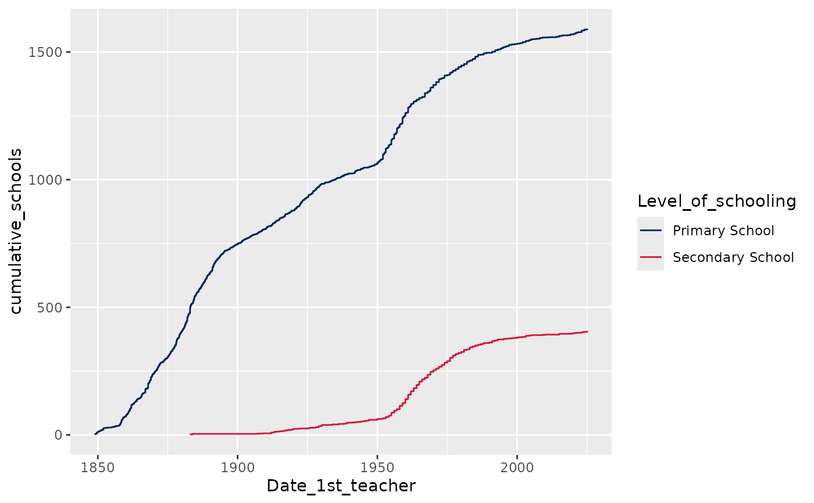

Apply a DoE palette to the colour aesthetic
Arguments
- palette
An object of class
palettes_palette. Several useful palettes are ready to use in the listdoe_palettes, which is included with thedoestylepackage. The default isdoe_palettes$qualitative$default, which uses all of the on-brand colours defined in the NSW Department of Education Brand Guidelines.- discrete
Logical indicating whether the desired scale should be discrete. The default is
TRUE. IfFALSE, a continuous scale with interpolated colours will be constructed, instead.- direction
Sets the order of colours in the scale. If 1, the default, colours are ordered from first to last as they appear in the palette. If -1, the order of colours is reversed.
- ...
Additional arguments passed to
ggplot2::discrete_scale()orggplot2::continuous_scale().
Value
A scale function that can be added to a ggplot2 plot.
See also
doe_palettes for the palettes available in
doestyle.
Examples
library(dplyr)
#>
#> Attaching package: ‘dplyr’
#> The following objects are masked from ‘package:stats’:
#>
#> filter, lag
#> The following objects are masked from ‘package:base’:
#>
#> intersect, setdiff, setequal, union
library(ggplot2)
library(doestyle)
# Plot growth in primary and secondary schools over time
public_schools |>
filter(Level_of_schooling %in% c("Primary School", "Secondary School")) |>
arrange(Date_1st_teacher) |>
mutate(
count = 1,
cumulative_schools = cumsum(count),
.by = Level_of_schooling) |>
ggplot(aes(x = Date_1st_teacher,
y = cumulative_schools,
colour = Level_of_schooling)) +
geom_step() +
# Add a default DoE colour scale
scale_colour_doe()
